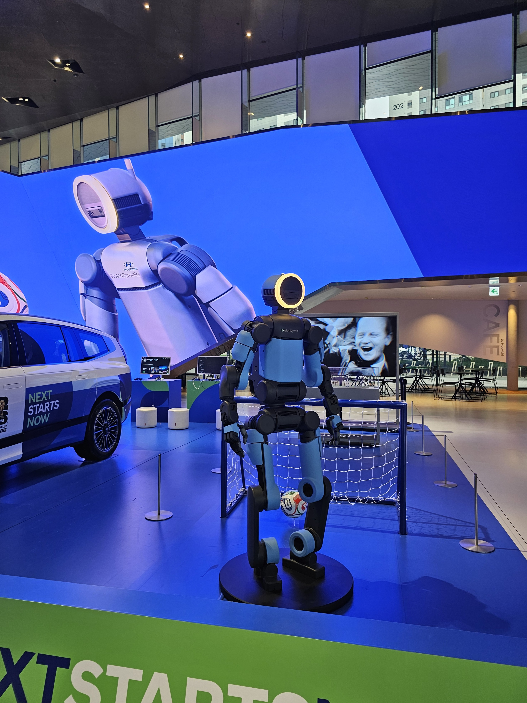
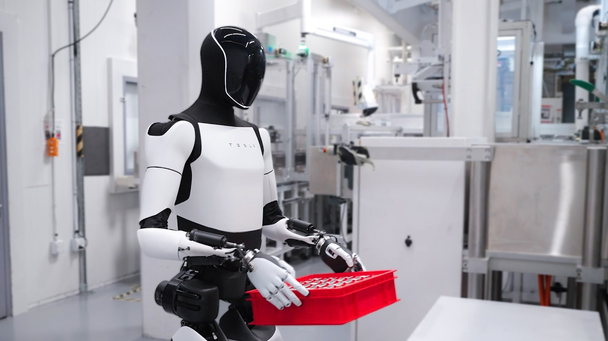
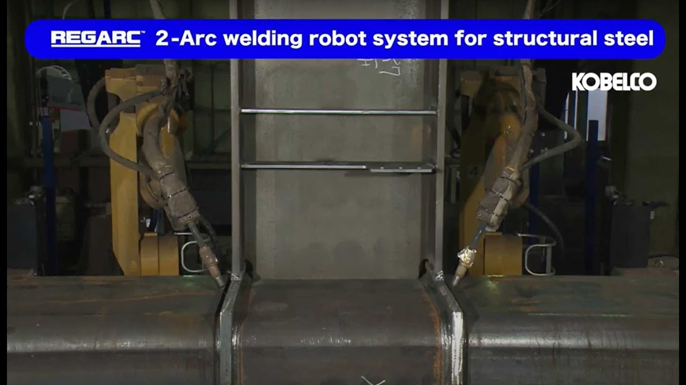
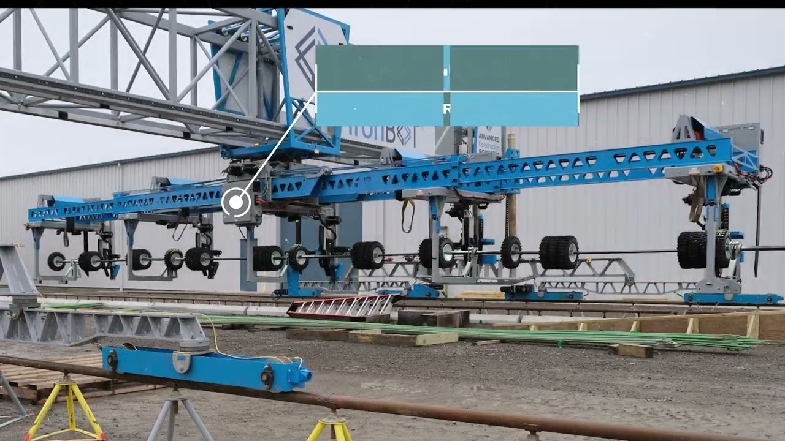
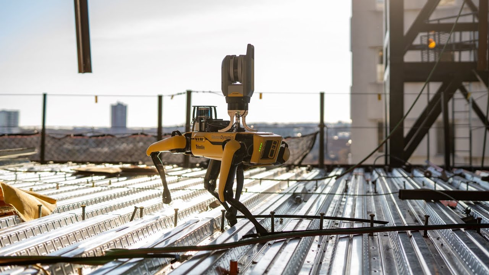
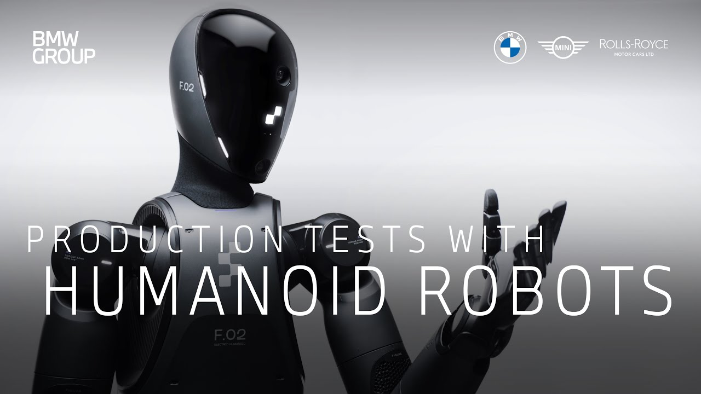

Vores flåde
Humanoid robotter under udvikling
Vi designer, bygger og tester næste generations robotter til konstruktion, vedligehold og farlige opgaver på byggepladser. Hver robot har specifikke styrker og modenhedsniveauer. Tryk ind for at se en reference-demo.

Atlas-X
Vores flagskib humanoid. Avanceret balance, præcision og styrke til tunge løft og montage på byggepladser.
Prototype
Orion Walker
Bipede gå-robot til terrængående opgaver. Udviklet til inspektion, overvågning og lette byggeopgaver i ujævnt terræn.
Koncept
Forge Arm
Specialiseret arm-manipulator til præcis svejsning, boring og materialehåndtering. Integreres med eksisterende byggeudstyr.
Pilot
Neo Hauler
Stærk transport- og logistikrobot. Kan bære op til 250 kg materialer autonomt over byggepladser.
In Development
Scout MK2
Letvægts inspektionsrobot med kameraer, sensorer og AI til sikkerhedschecks og 3D-mapping af byggepladser.
Beta
Horizon Series
Fremtidig familie af alsidige humanoide robotter. Modulær design til hurtig tilpasning til nye byggeopgaver.
Research